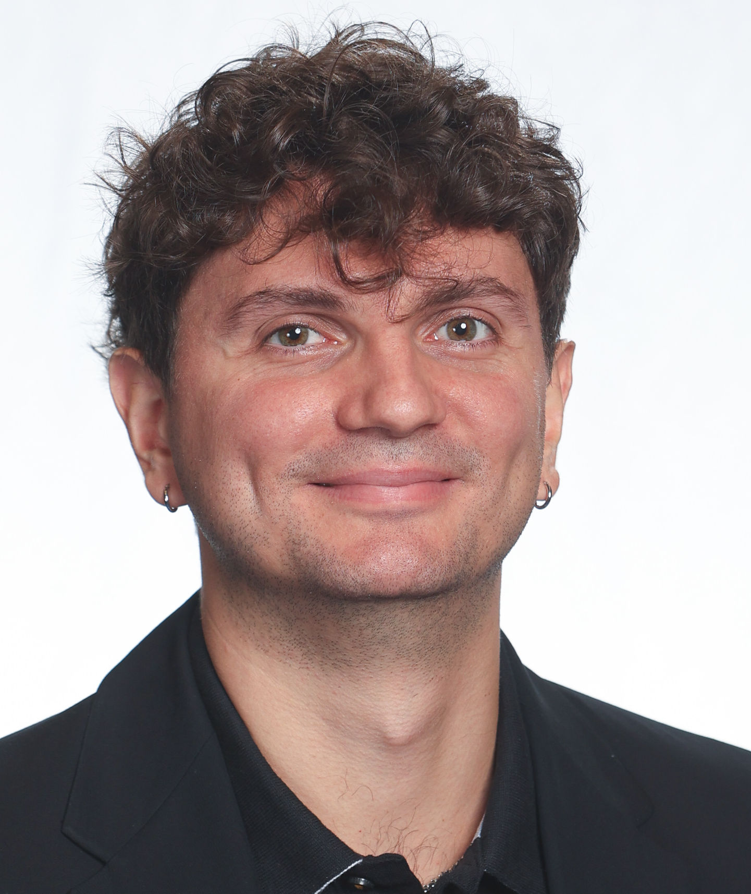

Kevin Mato
Quantum Computing Libraries Engineer @ NVIDIA | PhD in Quantum Computing
Quantum, HPC, AI, Engineering & Software Development
Quantum Computing Libraries Engineer at NVIDIA with a PhD in Quantum Computing from the Technical University of Munich. Passionate about quantum full-stack toolchains, HPC acceleration, and open-source development.